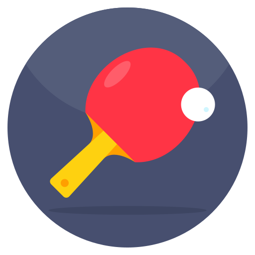

To play table tennis, players use small paddles to hit a lightweight ball back and forth across a table divided by a net. The game starts with a service, where the ball must bounce once on the server's side and once on the receiver's side. After the serve, players take turns hitting the ball, making sure it passes over the net and bounces exactly once on the opponent's side. You score a point when your opponent misses or hits the ball out of bounds.
Table tennis can be played almost anywhere, from casual games in homes, office breakrooms, and public parks to more structured matches at local community centers. For those seeking a higher level of play, dedicated table tennis clubs and sports complexes offer professional tables and a community of players for every skill level.